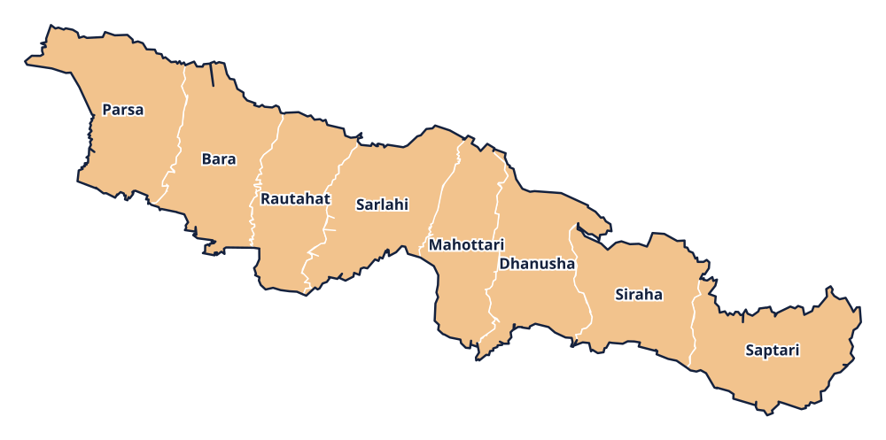

Province 2 · प्रदेश 2
Madhesh Province
मधेश प्रदेश

Provincial information
Capital: Janakpur (जनकपुरधाम)
Districts: 8
District directory
Select a district to view its profile, find news coverage, and browse local links.
Province 2 · प्रदेश 2
मधेश प्रदेश

Capital: Janakpur (जनकपुरधाम)
Districts: 8
Select a district to view its profile, find news coverage, and browse local links.